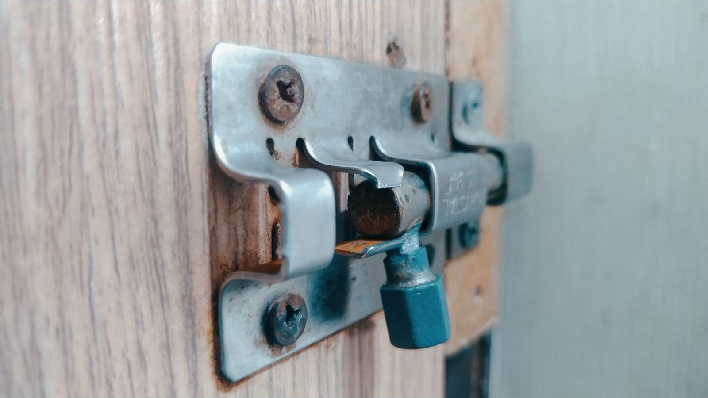
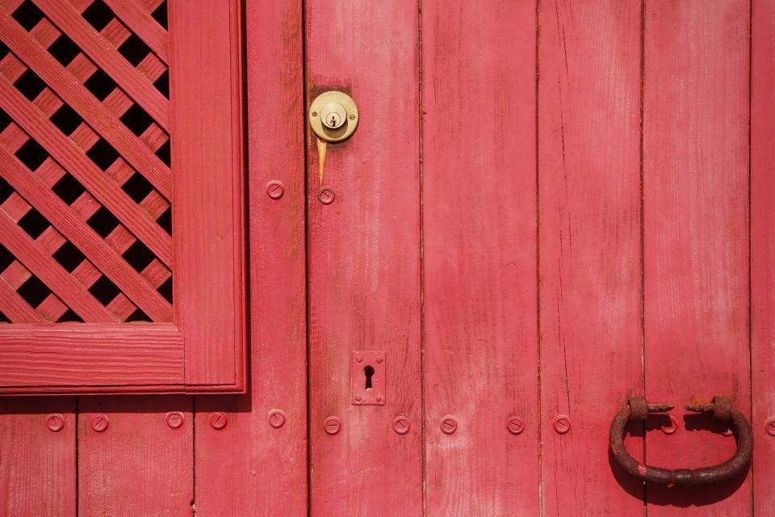
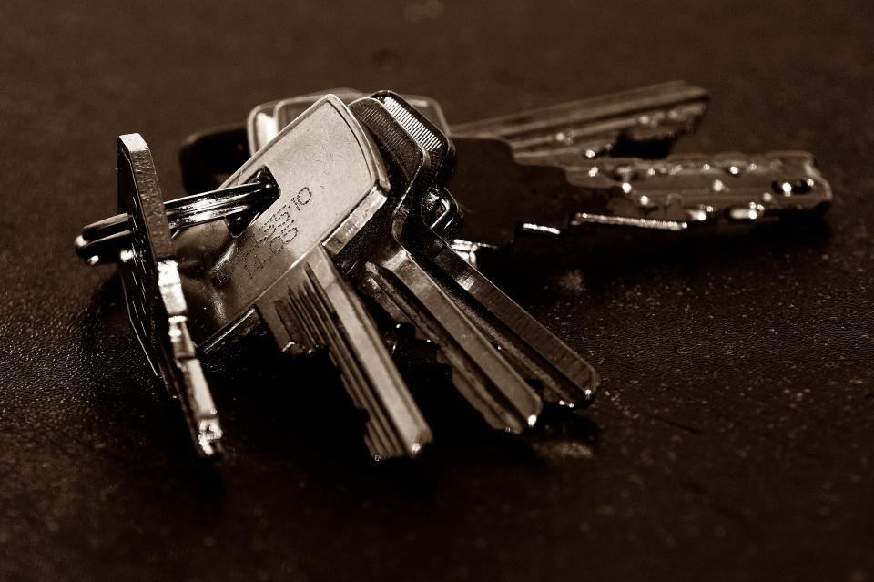

Tjänster
Butiken ligger kvar på samma adress, men i dag gör vi lika mycket ute hos kunderna: låsbyten, nyckelsystem för föreningar i Vivalla, Rynninge och Adolfsberg och service av kassaskåp åt butiker och kontor i hela Örebro län.
Vad behöver du hjälp med?

Villor och lägenheter
Har du köpt hus, tappat en nyckel eller haft inbrott byter vi låscylindrar och monterar SSF-godkända lås som försäkringsbolagen kräver. Vi har alltid de vanligaste cylindrarna i bilen.
Ett normalt låsbyte i en villa tar under en timme.

Bostadsrättsföreningar
Vi bygger och förvaltar nyckelsystem åt drygt 140 föreningar i Örebro. Systemen registreras hos oss så att bara styrelsen kan beställa nya nycklar.
Vid lägenhetsförsäljning byter vi cylinder i lägenhetsdörren till ett fast pris.

Butiker och kontor
Kassaskåp, dagkassaboxar och kodlås till personalutrymmen. Vi servar skåp åt ett sextiotal butiker längs Drottninggatan och i Marieberg.
Kodbyte på kassaskåp gör vi samma dag när en anställd slutar.

Verkstad och renovering
I verkstaden bakom butiken renoverar vi kistlås, gamla kassaskåp och lås till kyrkor och gårdar. Delar som inte finns svarvar vi själva.
Karins farbror Lars, 71, är fortfarande med två dagar i veckan.
Från disken till din dörr
- 1
Ring eller kom in
Beskriv dörren och låset, eller ta med en bild. Vi säger direkt om det är en butiksfråga eller ett hembesök.
- 2

Fast pris
För låsbyten i villor och lägenheter får du ett fast pris innan vi kör ut.
- 3

Montören byter
Montören byter lås och cylindrar, provar alla nycklar och tar med det gamla låset.
- 4

Registrering
Nycklar och cylindrar registreras hos oss så att du kan beställa fler utan att börja om.
Yrkesbevis och försäkringar
- Medlem i SLR sedan 1961Sveriges Låssmeders Riksförbund – vi följer förbundets yrkesregler och etiska krav.
- Mästarbrev, låssmedKarin Lindqvist och två montörer har mästarbrev, övriga montörer gesällbrev.
- SSF-godkända låsVi monterar och intygar lås enligt SSF 3522, som försäkringsbolagen utgår från.
- Ansvarsförsäkring 10 MkrAlla uppdrag är försäkrade, även nyckelsystem som vi förvarar åt kunder.